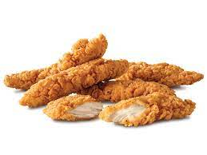

Chicken Tenders

Description
Nothing hits better than chicken tenders after a long day of work. This recipe is perfect as a guilty pleasure or one to share with your kids.
Ingredients
- 1/4 cup all-purpose flower
- 1 egg
- 1 tablespopon water
- 1 cup bread crumbs
- 1/2 cup grated Parmesan cheese
- 20 oz chicken breast tenders
Steps
- Heat oven to 425 F. Line baking sheet with foil; spray with cooking spray.
- In three shallow dishes, fill one with flower, another with a beaten egg and water, and the last with bread crumbs and cheese. Coat chicken with flower; dip into egg mixture, then coat with bread crumb mixture. Place onto baking sheet.
- Bake 15 to 20 minutes, turning once, until chicken is no longer pink in center and coating is golden brown.